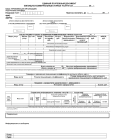
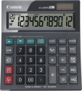
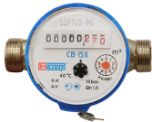
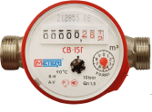
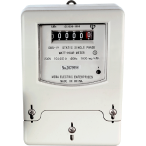

В этой инструкции мы разложим по полочкам сложный процесс оплаты коммунальных услуг — от использования платежки до внесения показаний счетчика.
Вам понадобятся

ЕПД

Калькулятор

Счетчик холодной воды

Счетчик горячей воды

Счетчик электроэнергии
Шаги
1
Здесь вам понадобится единый платёжный документ. Отсканируйте QR-код и оплатите нужную сумму

2
На вотором шаге вам нужно будет передать показания счётчиков. Найдите у себя в квартире счётчик горячей и холодной воды, а так же электричества. Запишите текущие цифры
3
Теперь зайдите на сайт mos.ru и в каталоге услуг найдите в поиске передать показания счётчиков. Введите цифры, списанные со счётчиков